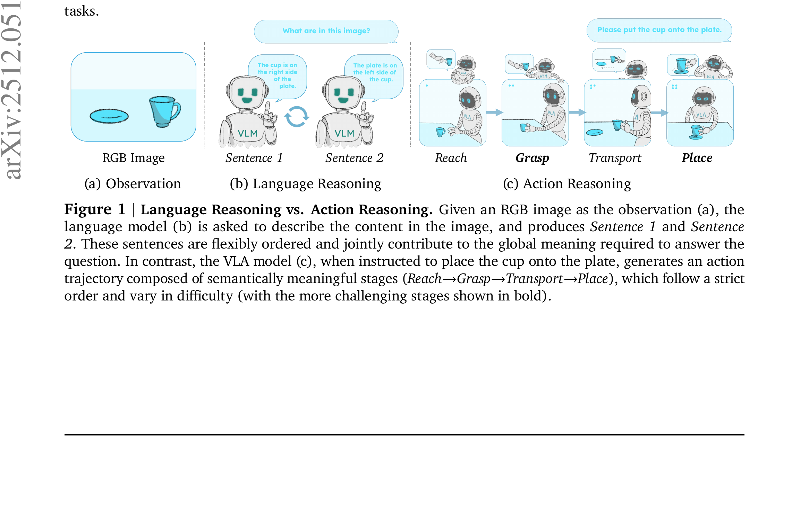

STARE-VLA: Progressive Stage-Aware Reinforcement for Fine-Tuning Vision-Language-Action Models
Xu 等 · Technical University of Munich · 2025 · arXiv:2512.05107 · Zotero M9M2UT3K
贡献不是更多奖励，而是把长程因果结构显式写进信用分配和训练课程。
§1 Introduction：作者为什么必须做这篇工作
长程操作不是一句可随意重排的语言，而是必须依次完成 reach、grasp、transport、place。轨迹级 PPO/TPO 只给整条序列一个分数，会把成功或失败平均摊给所有动作，导致早期简单阶段和后期困难阶段互相干扰。
STARE 把轨迹按语义阶段拆分，给每阶段密集、可解释的 reinforcement。它既能嵌入离线 TPO 形成 STA-TPO，也能嵌入在线 PPO 形成 STA-PPO；再以 SFT → Preference → Interaction 构成 IPI 渐进后训练流水线。
展开原文 · 核心动机
“action trajectories progress through causally chained stages”
§2 Related Work：它接在哪些路线之后
语言模型偏好优化常在 sequence level 计算 reward；机器人 hierarchical RL 则长期使用 option/subgoal 做时间抽象。STARE 将阶段思想落到 VLA token trajectory，并让阶段边界服务于信用分配而非另起高层 policy。
与简单 reward shaping 不同，STARE 同时调整 advantage 与优化顺序：先学稳定模仿，再学离线相对偏好，最后用在线交互修正闭环错误。
§3 问题设定：状态、动作与反馈
长轨迹先按任务语义切成多个阶段，每个阶段得到独立进度/成功信号。STA-TPO 处理离线偏好，STA-PPO 在阶段内部做在线更新。
§4 方法总览：沿原图走一遍
上一节确定了学习接口；现在看论文原图，追踪观测如何变成动作、环境反馈又如何回到可训练模块。

1. SFT 学到基本动作与语言对齐
先用 SFT 学会视觉、语言与基本动作对应，确保策略能偶尔完成整条任务。它提供稳定初始化，也让后续阶段边界能从可解释动作序列中识别，而不是面对随机行为。
输入是什么：相机图像或视频，加上任务指令和机器人当前状态。它们还是原始观测，模型尚未把它们变成可用于预测或控制的特征。
这一步究竟做什么：先用 SFT 学会视觉、语言与基本动作对应，确保策略能偶尔完成整条任务。它提供稳定初始化，也让后续阶段边界能从可解释动作序列中识别，而不是面对随机行为。
输出到哪里：经过本步骤处理、含义更明确的中间结果。这个结果会交给下一步“阶段分解器标出 reach/grasp/transport/place”继续处理。
为什么不能省略：它把未经处理的原始问题变成后续模块可以计算的输入，是整条链路的起点。
2. 阶段分解器标出 reach/grasp/transport/place
阶段分解器把长轨迹切成 reach、grasp、transport、place 等因果片段。边界定义决定回报作用范围；若 grasp 失败，信用不会错误地平均分给已正确完成的 reach。
输入是什么：来自上一步“SFT 学到基本动作与语言对齐”的产物：经过本步骤处理、含义更明确的中间结果。本步骤还会按论文设置读取当前条件、时间步或训练信号。
这一步究竟做什么：阶段分解器把长轨迹切成 reach、grasp、transport、place 等因果片段。边界定义决定回报作用范围；若 grasp 失败，信用不会错误地平均分给已正确完成的 reach。
输出到哪里：经过本步骤处理、含义更明确的中间结果。这个结果会交给下一步“STA-TPO 用阶段偏好改善离线轨迹”继续处理。
为什么不能省略：它承担上下两步之间的接口；缺少它，前一步产生的信息无法以正确格式或正确含义传到下一步。
3. STA-TPO 用阶段偏好改善离线轨迹
STA-TPO 在离线轨迹对上按阶段比较好坏，为每段产生更细的偏好监督。它先利用静态数据改善动作精度，又避免整轨迹 TPO 的粗粒度分数掩盖局部错误。
输入是什么：来自上一步“阶段分解器标出 reach/grasp/transport/place”的产物：经过本步骤处理、含义更明确的中间结果。本步骤还会按论文设置读取当前条件、时间步或训练信号。
这一步究竟做什么：STA-TPO 在离线轨迹对上按阶段比较好坏，为每段产生更细的偏好监督。它先利用静态数据改善动作精度，又避免整轨迹 TPO 的粗粒度分数掩盖局部错误。
输出到哪里：经过本步骤处理、含义更明确的中间结果。这个结果会交给下一步“STA-PPO 用在线阶段奖励完成闭环修正”继续处理。
为什么不能省略：它承担上下两步之间的接口；缺少它，前一步产生的信息无法以正确格式或正确含义传到下一步。
4. STA-PPO 用在线阶段奖励完成闭环修正
STA-PPO 再用在线阶段奖励修正闭环分布偏移。每阶段 advantage 只更新对应动作区间，最终把离线偏好与真实交互串成 SFT → Preference → Interaction 的渐进流程。
输入是什么：来自上一步“STA-TPO 用阶段偏好改善离线轨迹”的产物：经过本步骤处理、含义更明确的中间结果。本步骤还会按论文设置读取当前条件、时间步或训练信号。
这一步究竟做什么：STA-PPO 再用在线阶段奖励修正闭环分布偏移。每阶段 advantage 只更新对应动作区间，最终把离线偏好与真实交互串成 SFT → Preference → Interaction 的渐进流程。
输出到哪里：一个分数、奖励或价值估计，用来比较候选，而不是直接控制机器人。这是图中这条链路的最终产物，随后会进入真实执行、模型更新或指标评测。
为什么不能省略：只有生成候选而没有评价标准，模型不知道哪个结果更好；这一步把‘好坏’变成可比较的学习信号。
§5 机制细拆：为什么这个接口可能有效
每个阶段的 advantage 只影响对应动作片段，避免最终成功奖励错误覆盖早期阶段。
按 IPI 顺序逐阶段更新 VLA；后续 RL 以上一阶段 checkpoint 为初始化。
贡献不是更多奖励，而是把长程因果结构显式写进信用分配和训练课程。
§6 目标函数：公式逐项读
下面的教学化表达抓住论文的主要更新方向；读它时不要只看符号，要检查回报作用在哪个变量、哪些部分保持冻结。
- $\mathcal S_k$
- 第 $k$ 个语义阶段包含的动作区间。
- $R_k$
- 该阶段自己的进度或完成回报。
- $A_k$
- 相对于阶段起点价值的优势。
- $\sum_k$
- 把各阶段更新组合，而不是用一个轨迹分数覆盖全程。
§7 训练与评测：数字在什么条件下成立
SimplerEnv 与 ManiSkill3 长程任务；比较 SFT、轨迹级 TPO/PPO、单独 STA-TPO/STA-PPO 与完整 IPI。
| 学习接口 | 长轨迹先按任务语义切成多个阶段，每个阶段得到独立进度/成功信号。STA-TPO 处理离线偏好，STA-PPO 在阶段内部做在线更新。 |
|---|---|
| 信用分配 | 每个阶段的 advantage 只影响对应动作片段，避免最终成功奖励错误覆盖早期阶段。 |
| 更新范围 | 按 IPI 顺序逐阶段更新 VLA；后续 RL 以上一阶段 checkpoint 为初始化。 |
| 实验覆盖 | SimplerEnv 与 ManiSkill3 长程任务；比较 SFT、轨迹级 TPO/PPO、单独 STA-TPO/STA-PPO 与完整 IPI。 |
§8 结果怎么读：证据与归因
论文报告 SimplerEnv 98.0%、ManiSkill3 96.4% 的成功率；解释结果时应重点看阶段消融与长 horizon 增益，而不是把两个峰值直接外推到真机。
§9 复现与工程检查
明确阶段边界来自规则、模型还是人工标注；报告边界误差敏感性；在相同 rollout 数下比较轨迹级与阶段级 advantage。
- 先复现冻结的 SFT/BC 基线，再打开 RL 或偏好更新。
- 同时记录环境步、墙钟时间、人工干预、策略版本和推理延迟。
- 逐任务保存失败轨迹，避免平均成功率掩盖分布偏移。
§10 适用边界与研究启发
阶段划分本身可能成为新瓶颈；非线性或可回退任务不一定有固定顺序；仿真成功率尚不能替代真实长程安全评测。